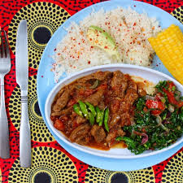

NYAMA WET FRY

This is a Kenyan dish favourite for many people
It is made from beef, mutton or pork
Ingredients
- Onions
- Meat 1kg
- Tomatoes
- Salt
- oil
Steps
- Wash the meat and boil for 30 minutes
- Add salt
- Wash the onions and tomatoes then cut them into slices
- Pour oil in a sufuria and add the ingredients
- Add the boiled meat into the sufuria
- Let it cook for 20 minutes
- Ready to be served, best with Ugali